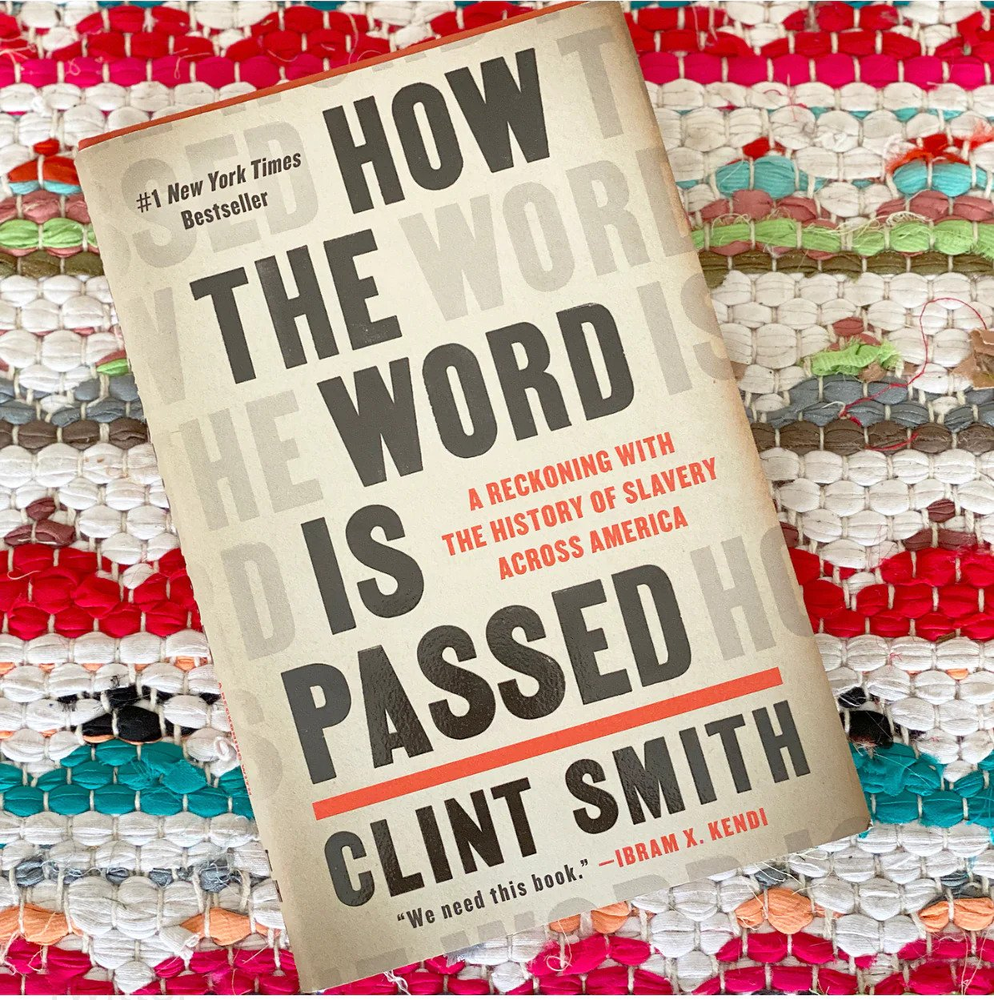
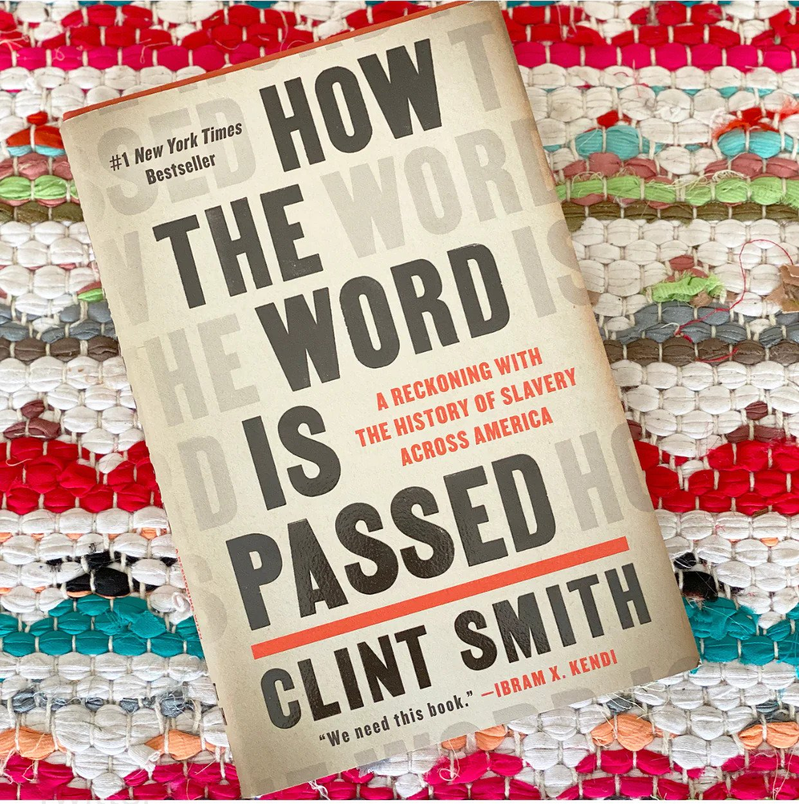

How the word is passed
Price: $14.99
Description:
Beginning in his hometown of New Orleans, Clint Smith leads the reader on an unforgettable tour of monuments and landmarks—those that are honest about the past and those that are not—that offer an intergenerational story of how slavery has been central in shaping our nation's collective history, and ourselves.
It is the story of the Monticello Plantation in Virginia, the estate where Thomas Jefferson wrote letters espousing the urgent need for liberty while enslaving more than four hundred people. It is the story of the Whitney Plantation, one of the only former plantations devoted to preserving the experience of the enslaved people whose lives and work sustained it. It is the story of Angola, a former plantation-turned-maximum-security prison in Louisiana that is filled with Black men who work across the 18,000-acre land for virtually no pay. And it is the story of Blandford Cemetery, the final resting place of tens of thousands of Confederate soldiers.
A deeply researched and transporting exploration of the legacy of slavery and its imprint on centuries of American history, How the Word Is Passed illustrates how some of our country's most essential stories are hidden in plain view—whether in places we might drive by on our way to work, holidays such as Juneteenth, or entire neighborhoods like downtown Manhattan, where the brutal history of the trade in enslaved men, women, and children has been deeply imprinted.
Informed by scholarship and brought to life by the story of people living today, Smith's debut work of nonfiction is a landmark of reflection and insight that offers a new understanding of the hopeful role that memory and history can play in making sense of our country and how it has come to be.